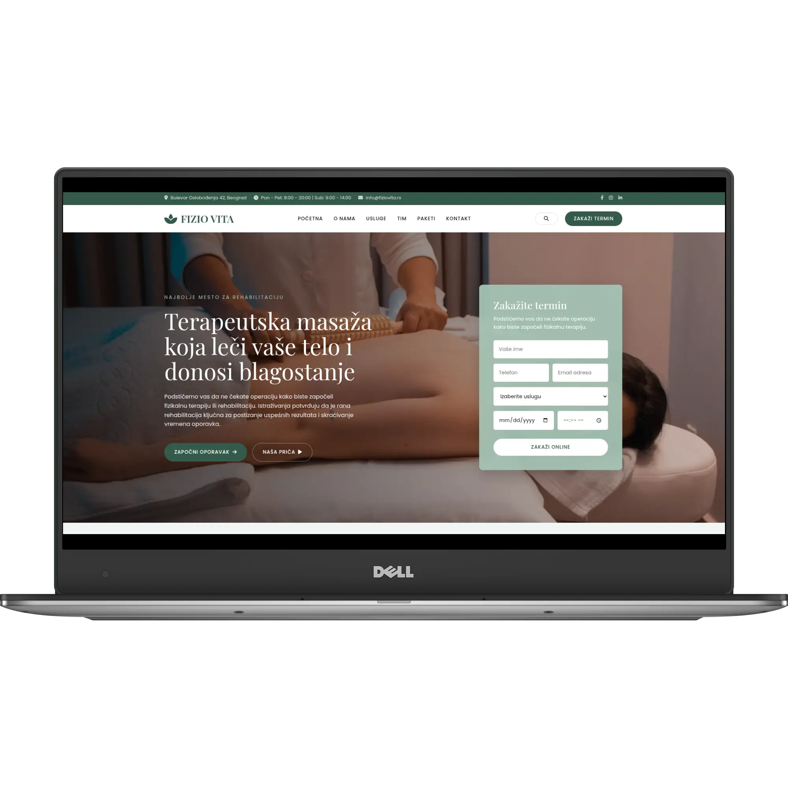
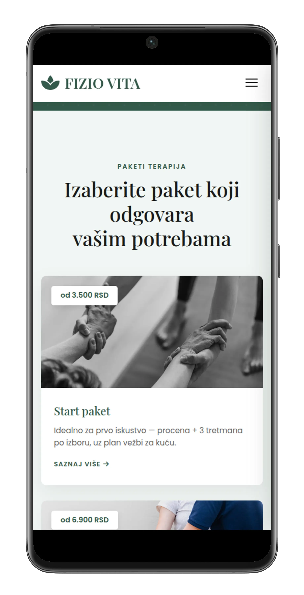

Fizioterapija — koncept digitalnog iskustva za ordinaciju kojoj se veruje

01 / Kontekst
Fizioterapija je oblast u kojoj pacijenti dolaze sa bolom, strahom i nerealnim očekivanjima. Ovaj koncept je osmišljen za izmišljenu ordinaciju "Fizio Vita" koja želi da se predstavi kao mesto gde se pacijent oseća sigurno, informisano i zbrinuto od prvog klika. Cilj je bio stvoriti digitalni prostor koji zrači smirenošću i stručnošću, i koji pacijenta vodi od prve posete sajtu do zakazanog termina bez ikakve sumnje.
02 / Izazov
Pacijenti koji traže fizioterapeuta često se suočavaju sa istim preprekama na internetu:
- Strah od nepoznatog: Pacijent ne zna šta ga čeka na prvom pregledu, koliko tretmana mu treba, ni da li će osećati bol.
- Nepoverenje u cene: Mnoge ordinacije kriju cene, što stvara osećaj da će pacijent biti "iznenađen" na kraju.
- Otežano zakazivanje: Pacijenti često moraju da zovu u toku radnog vremena, što je za zaposlene ljude često nemoguće.
- Nedostatak društvenog dokaza: Bez stvarnih iskustava drugih pacijenata, teško je izgraditi poverenje pre prvog dolaska.
03 / Pristup
Rešenje je građeno oko ideje "smirenog poverenja" — svaki element treba da smanji anksioznost i poveća jasnoću:
Struktura vođena pacijentom
One-page struktura prati put pacijenta: od predstavljanja ordinacije i filozofije, preko jasnih opisa usluga i paketa, do utisaka i zakazivanja. Nijedan korak nije preskočen.
Vizuelni identitet smiraja
Korišćene su meke, neutralne boje i čist, čitljiv font. Prostor između elemenata je velikodušan, stvarajući osećaj prostranstva i mira, suprotno od užurbanih medicinskih sajtova.
Transparentnost bez kompromisa
Jasno definisani paketi terapija sa cenama (Start, Standard, Premium) odmah su vidljivi. Pacijent tačno zna šta dobija i koliko košta, što gradi poverenje pre dolaska.
Mobilnost i brzina
Većina pacijenata pretražuje u pokretu. Sajt je optimizovan za trenutno učitavanje na telefonu, sa formom za zakazivanje koja je dostupna u svakom trenutku.
04 / Šta je uključeno
- One-page dizajn: Sve informacije na jednom mestu — od filozofije do paketa terapija.
- Responzivnost (Mobile-first): Savršen prikaz na telefonima, gde se obavlja najveći deo pretraga.
- Online zakazivanje: Jasna forma za zakazivanje termina, bez potrebe za telefonskim pozivom.
- Transparentni paketi terapija: Tri nivoa usluga sa jasno naznačenim cenama i opisom šta uključuju.
- Društveni dokazi: Istaknuti utisci pacijenata i statistike o uspehu (zadovoljstvo, nagrade, broj terapeuta).
- SEO osnova: Semantički HTML i pravilno strukturirani naslovi za bolje lokalno rangiranje.
05 / Rezultat
Pogledaj kako dizajn funkcioniše u praksi, na različitim uređajima.

